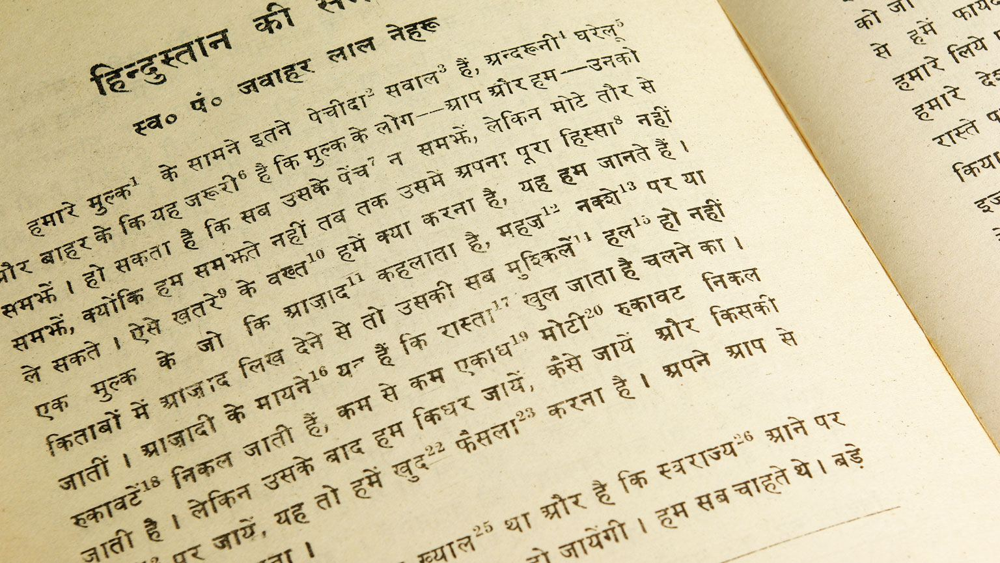

ЯЗЫК ХИНДИ
- На хинди говорят 422 048 642 человека, по данным переписи населения Индии от 2001 года. В данную статистику входят также люди, говорящие на разных диалектах и вариациях речи, сгруппированных под хинди. Для 257 919 635 носителей - это родной язык.
- Язык хинди имеет относительно свободный порядок слов. Порядок слов без обозначений в этом языке может выглядеть следующим образом - субъект-объект-глагол. Существительные в этом языке могут иметь суффиксы, а прилагательные могут меняться, если расположены перед существительными.
- В языке хинди вы сможете найти множество слов, которые встречали ранее в английском языке. Причем слова эти имеют именно хинди-происхождение. К примеру: guru, jungle, karma, yoga, bungalow, looting, thug, cheetah and avatar. В это сложно поверить, но огромное количество слов, перекочевавших почти во все языки мира, имеют именно индийское происхождение.
- Еще один интересный факт о хинди заключается в том, что он является одним из семи языков, которые можно использовать для создания адресов в Интернете.
- Хинди достаточно легок в чтении и произношении. На хинди слова пишутся так, как они произносятся, потому что у каждого символа свой звук.